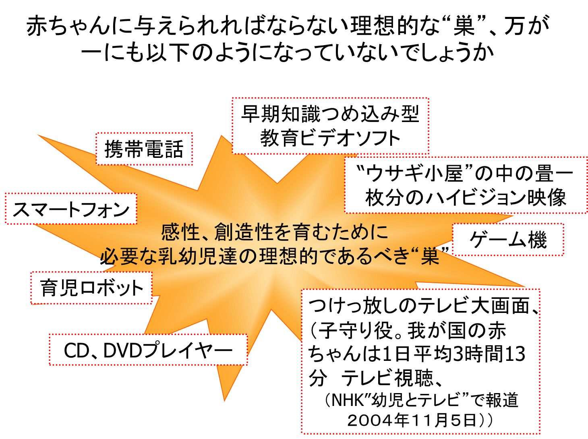
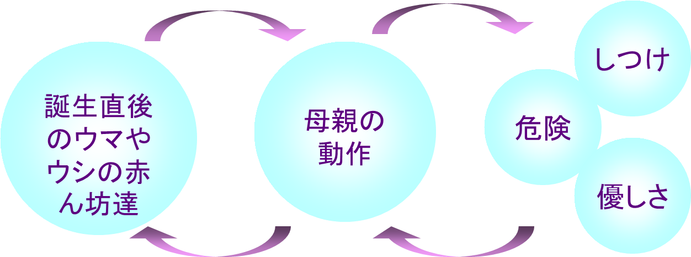
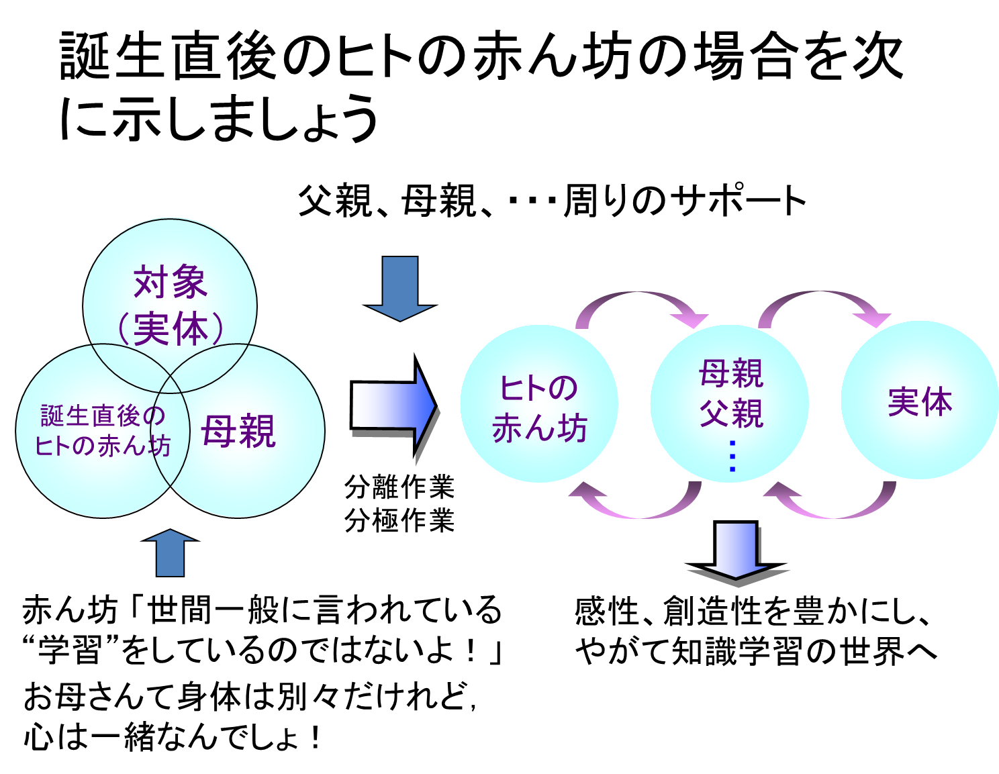
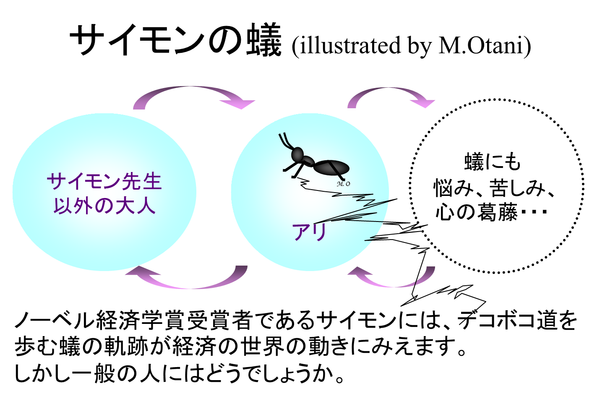
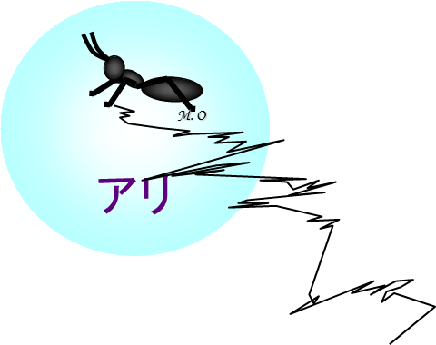
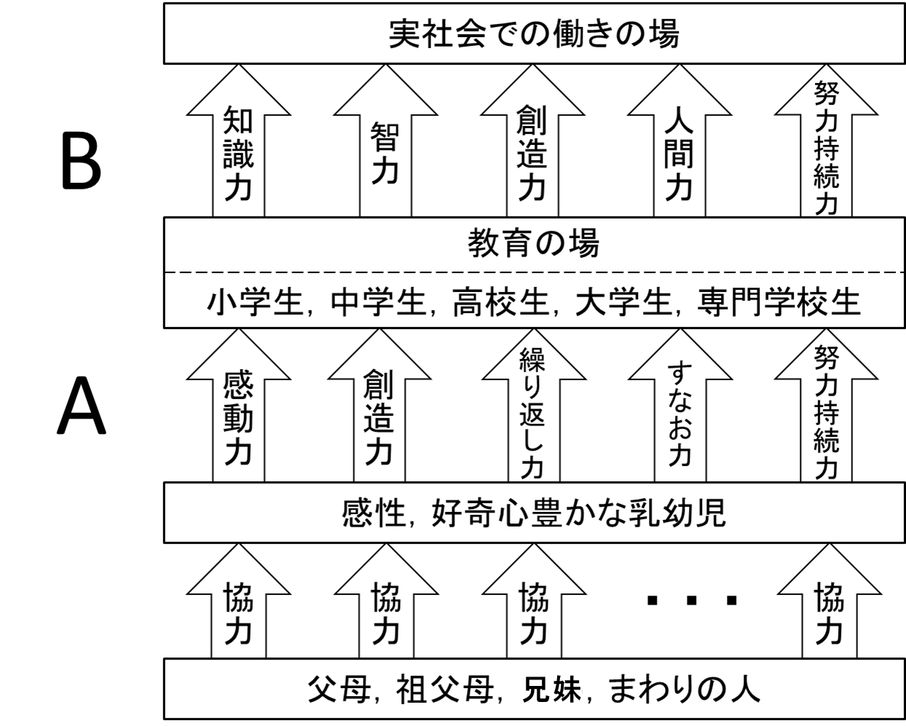
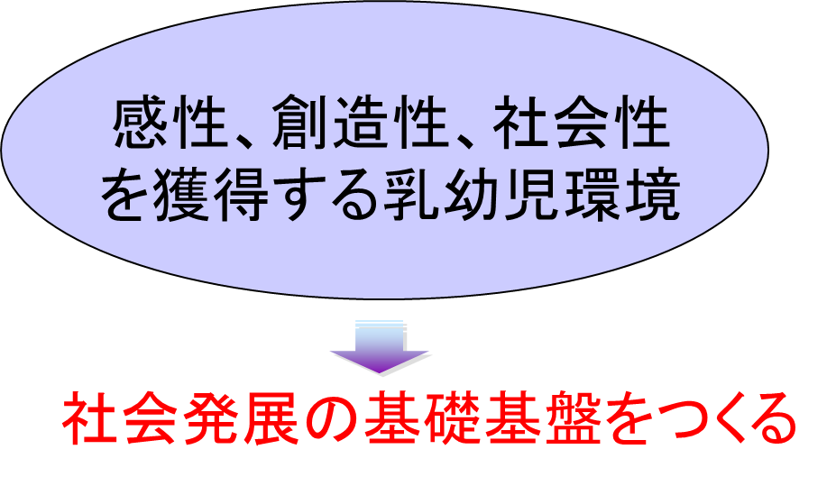

“赤ちゃん”ってどんな存在？
-----------------------------
ヒトの“赤ちゃん” ⇒ ヒトの“赤ん坊”
（ヒトが主語の場合、“赤ちゃん”とは言わないで、
赤ん坊という用語が一般に使われます）
赤ちゃんの本当の姿（１）
ヒトの赤ん坊は高等哺乳類の中では唯一“子宮外胎児”という存在です。
つまり、ヒトの赤ん坊は胎児の姿で誕生します。全ての高等哺乳類の赤ん坊が離巣性であるのに、ヒトの赤ん坊は唯一の例外として就巣性、つまり“巣”が必要なのです。
ヒトの赤ん坊は“巣”の中でじっとしているだけで随意運動が不可能なのです。
しかし注意しなければならないことは脳は極めて能動的に活動しているということです。随意運動は不可能であっても赤ちゃんの脳は高等哺乳類の中では群を抜いて活発に働きつづけます。
頭の良い子になるための活発な能動的活動です！
この能動的な活動に対して、まわりの人達が間髪入れず応えてあげなければ、赤ちゃんたちの能動的活動は力を失うでしょう。そして赤ちゃんたちは無気力になるでしょう。
ヒトの赤ん坊は就巣性という点ではドブネズミ（ラット）などの下等哺乳類に近い存在です。（ただしモルモットは離巣性です。念のため）
しかし、脳が誕生直後から能動的に極めて活発に行動している点では高等哺乳類の中で群を抜いています。この作業を助け人間として育つためには就巣性であることを十分に考えた“巣”が必要です。まわりの人からのサポートを最大限に受け入れることができる“巣”が必要なのです。
このことを知ることが子育てのスタートラインであり、教育の基本の基本の基本の・・・基本です。
赤ちゃんの本当の姿（２）
ここで“あれっ”と思われ方も多いでしょう。何故なら
ワシやタカなどは就巣性でニワトリなどが離巣性で、トリの中では明らかに就巣性の方が賢いことを知っている
からです。
しかし高等哺乳類の中ではサルやイヌ、ウマ
など賢い動物は全て離巣性なのです。
ヒトだけが例外的な存在であることを強く認識することが、赤ちゃんに接する際の最も基本的な姿勢です。
ヒトとして必要な理想的な“巣”を用意してあげましょう。赤ちゃんを心身ともに健やかに育ててあげましょう。
人類５００万年の歴史の中で守りつづけてきた“巣”を用意して、育ててあげることが子育て、そして教育の基本の基本の・・・基本です。
赤ちゃんのための理想的な“巣”、万が一にも現在、以下のようになっていないでしょうか

ヒトを除く高等哺乳類の赤ん坊の場合
誕生直後であっても、母親の動作を見て、
直ちに“危険”,“しつけ”などを知ることができ、このことが例えば
危険なアフリカの草原を生き抜くために役立っています。

高等哺乳類： ヒト、サル、ウマ、ウシ、・・・
誕生直後のヒトの赤ん坊の場合を次に示しましょう

誕生直後のヒトの赤ん坊は、ほかの高等哺乳類の赤ん坊とは異なって、自分、母親そして実体が混沌とし、重なり合ったような状況の中にあるでしょう。赤ん坊は母親とは肉体的には分離していると認識していても、心理的には一体となっている、つまり心は繋がっていると感じているでしょう。
ウェルナー先生、カプラン先生がおっしゃっているようにヒトの赤ん坊は、誕生直後から、この混沌とした状況から抜け出すために、図に示したように懸命の分離作業、分極化の作業に励みます。この作業には周りの人達からのサポートが絶対に必要です。
誕生直後の１年間、ヒトの赤ん坊は上の図に示したような状態の確立を目指して極めて能動的に大人たちに働きかけるでしょう。
分離作業に忙しいこの時期、赤ん坊はピッチャー役となり、周りの人達はキャッチャー役になってコミュニケーションのキャッチボールをするでしょう。
赤ちゃんの投げるボールは
- 自発的微笑
- クーイング
- 喃語
- 摸ほう
- 相互作用の同期
など多種多様なボールです。これらのボールについて詳しくは
赤ちゃんの人権宣言 をご覧ください。
赤ちゃんは決してコントロールの良いピッチャーではありません。キャッチャー役の皆さん！右に、左に、あるいはジャンプして辛抱強くボールを拾ってあげて下さいね。
この時期に最も大切な心掛けの一つは赤ちゃんを赤ちゃんの目でとらえることでしょう。赤ちゃんの目になって、テレビと絵本の差を考えてみる姿勢が私達に要求されるでしょう。
赤ちゃんの目線に立ってものごとを眺めることの大切さ。これを“サイモンの蟻”のモデルで考えてみることにしましょう。
サイモンの蟻(illustrated by M.Otani)

サイモンの蟻(つづき)
“サイモンの蟻”は、年齢、経験により
テレビ画面等のとらえ方が全く異なることを教えています。

サイモン先生：この軌跡は世界経済の歩む道そっくりだな。
普通の人 ：蟻の歩みを自分の人生の歩みと重ね合わせる。
苦労したよなあ・・・。
小学生 ：蟻さん。けがしたのかな。かわいそうに。
幼児 ：蟻さん。お絵描きしている！楽しそうだな。
乳児 ：蟻さんに気がつくだけだよ・・・・・・。
“サイモンの蟻”は同じテレビ番組でも、大人、中高生、生学生、幼児、赤ちゃんによってとらえ方は全く異なることを教えています。
赤ちゃんの目にテレビはどのように見えているのでしょう。大人の目線ではなく赤ちゃんの目線に立って考えてみる必要があるのではないでしょうか。
乳幼児に接するときに心がけねばならないこと、それは以下のことでしょう：
“赤ちゃんにとって誕生後の二、三年は特に大切な期間であることを回りの人達が強く認識し、赤ちゃんとお母さんとを温かく見守り、手助けをしてあげること”
ではないでしょうか。
赤ちゃんが心身ともにすくすく育ち、長い学びの場を経てやがて実社会に巣立ったとき、実力を存分に発揮し、まわりの沢山の人達から期待される人間に成長する。こんな夢を実現するために、私達はどう努力したらよいのでしょう。このことを考えるためにもう一度下の図を見ていただきましょう。

全ての教育の基盤そして人生の土台をしっかり築きたいと思います。人の生涯で最も大切な意味を有する幼少期、この数年間の大切さを国民一人、ひとりが考える。このことは国家的重要な課題であると言えるのではないでしょうか。
子育ての森を大きく大きく育てます。温かいご声援よろしくお願い致します。
乳幼児教育環境、我が国は
ワーストワンではないでしょうか？！

・・・、小学校〜社会人の教育基盤の原点としての“乳幼児教育環境”の我が国のレベルは世界の中でかなり低いのではないでしょうか？
何故、世界ワーストワンの恐れがあるのでしょう
１．嫡出年齢の低年齢化と高年齢化（１９７５年以降、厚生省）。
１．世界から“うさぎ小屋”と揶揄される狭い居住空間に占めるIT機器のスペースが大。
１． 家族構成の変化、父親の勤務形態が欧米と異なり(日本人父親の１/３以上が１０時間以上働いている）我が国において母と子の１対１の子育てが中心となりました。
１． 子育ての場から、祖父母も消えてしまい、子守唄の文化、「むかしむかし・・・」で始まる口承文化が消えました。
１． 少子化で、お兄ちゃん、お姉ちゃんも少なくなって、かわりに子守役としてテレビが登場。つけっぱなしのテレビ視聴時間が我が国の赤ん坊において長くなりました。
１．スマートフォンなどが市民生活に急速に普及。（赤ちゃんの心身の成長のために望まれる環境、その環境への影響はないでしょうか）
―――おことわり―――
以上のこと、我が国全てのご家庭でこのようになっていると主張しているわけではありません。実態の把握が難しいために悲観的に考え過ぎているかもしれないことを申し添えておきたいと思います。
笠原先生の指摘するような家庭は少ない。たったひとにぎりの赤ちゃんたちのことを大げさに心配しているというご批判があれば、甘んじて受けましょう。しかしそういった赤ちゃんがたったひとにぎりに過ぎないにしても、問題の大きさは全く変わらないと私は思います。